Adobe Illustrator, part of the Adobe Creative Suite package, it is a powerful application used to create and
edit vector graphics. This extremely popular application is a considered an industry standard, and is used
widely by graphic designers to create logos, illustrations, and artwork for signs, posters, packaging and
many other printed products. Adobe Illustrator can also be used to create illustrative web graphics.
About this Class
This manual provides a basic introduction to the Illustrator interface and explores commonly used features by
guiding students through various exercises and applying those skills and tools in creating an e-card. During
this class, students will:
Become familiar with the Illustrator environment and workflow
Gain experience drawing graphic elements using common Illustrator tools
Gain exerience creating web and print document layouts
Illustrator 1 is the first in a series of Illustrator classes and is intended to serve as an introduction to
the application and to vector graphics in general. In order to explore more advanced techniques, students
should consider enrolling in Illustrator 2. In addition, after completing Illustrator 1, students are
eligible to enroll in Illustrator special topics classes, such as Logos and Typography.
This section provides a brief overview of the Illustrator interface and describes its commonly-used
components.
Interface Overview
The portion of the Illustrator interface that is used to view and edit documents is known as the Workspace. A
wide variety of windows, tools and menus (known as Panels) can be displayed within the Workspace in order to
provide quick access to the feaures needed for a given task.
Creating a New Document
Open the Illustrator application.
Click Create New
In the New Document window, adjust the settings to those shown below and click Create.
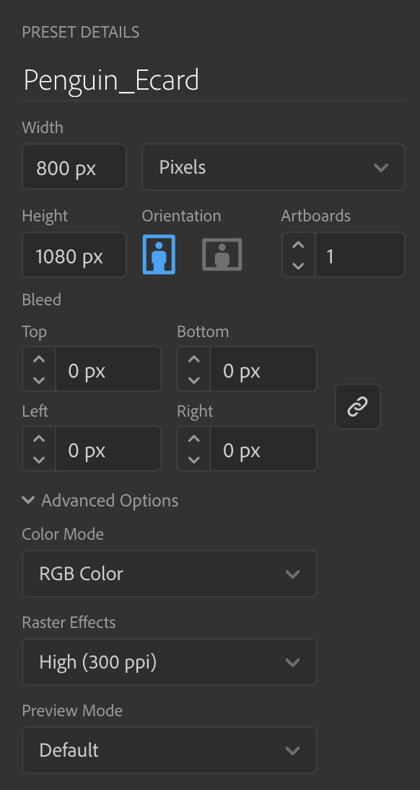
Interface Components
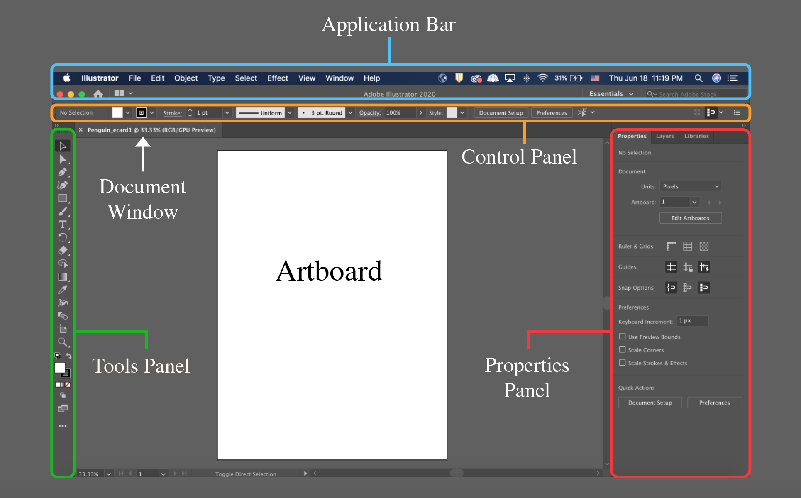
Application Bar
The Application Bar contains the Workspace Switcher menu and a shortcut to Adobe Bridge and Adobe Stock. The
Application Bar also contains the File, Edit, View, etc menus.
The Workspace Switcher menu can be used to arrange multiple windows. Depending on your project, there are a
variety of window layout options that will suit your needs. Use the drop-down menu to choose one of the many
available window layout options. For the rest of this tutorial, we will be using the
Essensials workspace.
Document Window
The Document Window displays the file that you are currently working on. If you have multiple files open,
each file appears as a tab in the Document Window, as shown above. The white rectangle inside the Document
Window, which displays the printable area of the Workspace, is called the Artboard.
Tools Panel
The Tools Panel contains tools used to create and manipulate artwork (like a toolbox). To select a tool,
simply click it. Tools with a triangle in the lower-right corner have additional tools hidden beneath them.
To display hidden tools, click and hold a tool icon; a drop-down menu showing the hidden tools will appear.
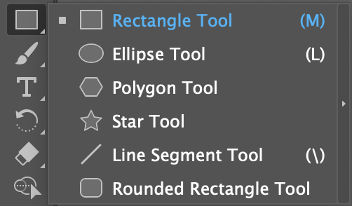
alt="The tools panel showing the various tool options that can be hidden under a given tool icon and revealed by clicking and holding">
Control Panel
The Control Panel displays options for the currently selected tool. Control Panel options are generally a
small subset of those available in other panels and menus. Keep in mind that there may be additional options
for your selected tool beyond those displayed in the Control Panel.
Control Panel Not Appearing?
As of Illustrator 2020, the Control Panel is off by default.
To enable this feature for easier access to alignment and fill/stroke tools, go to Window > Control
Properties Panel
The Properties Panel offers options to further monitor and modify your artwork, and some of these settings
can also be found in the Control Panel. There are also two other panels: the Layers Panel and the Libraries
Panel. We will delve more into the Layers Panel later in the workshop; however, you will not be using the
Libraries Panel.
Each panel is displayed on a separate tab. To bring a Panel to the front, click its tab.
Illustrator Practice Files
For the first half of the workshop, we will learn about the different tools available in Illustrator by
working through different exercises.
We will start by going to Files > Open and then selecting Illustrator-Practice-2020
Layers Panel
In many of the Adobe Create Suite applications, documents are often organized and separated into different
components called layers. You can edit and modify objects in each layer without affecting items in other
layers. The Illustrator practice file has multiple layers, and throughout this exercise, we want to work
within the 'Practice' layer in order to utilize the tools.
Go to the Layers Panel and select the 'Practice' layer.
Smart Guides
Before you begin, let's turn on Smart Guides. Smart Guides allow you to allign objects
on your artboard easily, and it will greatly aid you on your projects.
To enable this feature, go to the Application Bar and select View > Smart
Guides.
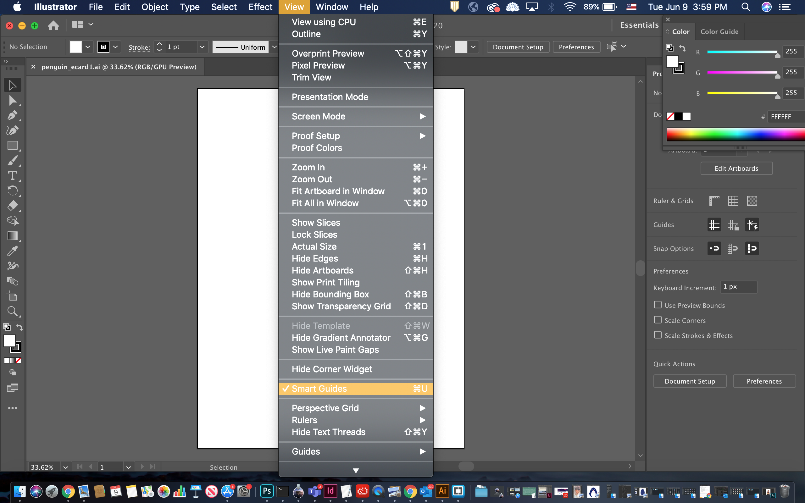
Navigating the Workspace
Working in Illustrator often involves moving around the workspace in order to focus on different portions of
your project. In this section, we discuss a few methods of navigating the workspace.
Zoom Tool
Zoom Tool:
The Zoom Tool lets you zoom in or zoom out to increase or decrease the document display size.
Quickly zoom with any tool by holding Alt/Option and scrolling with the mouse/trackpad or by
hitting Ctrl/Command and +/-
Hand Tool
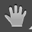
Hand Tool:
Used to move around the Artboard when the document is zoomed in beyond the workspace.
Shortcut: Hold Spacebar while dragging with the mouse.
Zoom in on Artboard so it extends beyond the Workspace
In the Tools Panel, Click the Hand Tool.
To pan around the Artboard, Click and Drag in the Document Window.
Fit Artboard in Window
Fit Artboard in Window
Used to quickly fit the artboard within the current window.
In the Application Bar, go to View > Fit Artboard in Window
Shortcut:Ctrl/Command + 0
Creating and Altering Basic Shapes
In this section, we will create basic shapes with the Shape Tools and alter its form with the Selection Tool.
We will also learn how to change the appearance of a shape by modifying its Fill Color, Stroke Color, and
Stroke Weight.
Creating a Square
Rectangle Tool
Use the Rectangle Tool to draw rectangles and squares.
Hold the Shift key to draw a perfect Square.
Hold the Alt/Option key to draw the shape from the center out (rather than from one corner to
the other)
Shortcut:M
In the Tools Panel, Click the Rectangle Tool to select it.
Create a square by holding the Shift Key while dragging out.
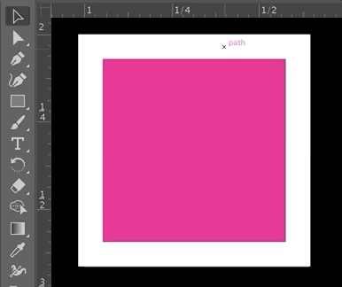
Selection Tool
Selection Tool
Use this tool to select, move, resize, rotate, etc. entire objects or groups of objects.
Select multiple objects by holding Shift and clicking each additional object, or by clicking and
dragging a box around the objects you'd like to select.
Shortcut: V
In the Tools Panel, Click the Selection Tool
Click on any object in the Artboard, a box with control points appear to designate an onbject is
selected.
Hold down Shift and Click to select multiple objects
In order to create a copy, first select the square with the Selection Tool. Next,
hold down the Alt/Option key while dragging out.
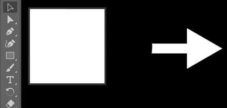
With the Selection Tool, move the copy over to the neighboring template. We want to
resize the shape while maintaining the same proportions, so hold the Shift Key while dragging out a
corners until it matches the template.
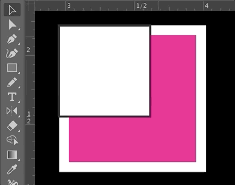
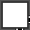
In the Tools Panel, double-click the white swatch in order to change the Fill, which is the color of
the shape.
To change the color of the outline, go to the Tools Panel and click on Stroke. In a similar fashion,
double-click the stroke swatch to change the Stroke Color.
We can increase or decrease the stroke weight by going to the Control Panel. Locate "Stroke" and
input a value to your liking for the Stroke weight.
Creating a Circle
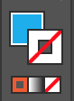
In this case, we do not want an outline for our circle. In the Tools Panel, click the stroke swatch
then select the small white box with a red slash through it, which means none.
Ellipse Tool
Use the Ellipse tool to easily draw ellipse and circles.
Hold the Shift key to draw a perfect circle.
Hold the Alt/Option key to draw the shape from the center out (rather than from one corner
to the other)
Shortcut:L
In the Tools Panel, hold down on the Rectangle Tool to display the hidden tools, and
select the Ellipse Tool
In order to draw a circle, we would hold the Shift Key, but before we do that, we want to make a
minor change. By default, we start by creating shapes from the corner, but we can also draw shapes
from the center out by holding the Alt/Option key while dragging out. Combine both of
these steps and hold the Shift Key and Alt/Option key while drawing a circle.
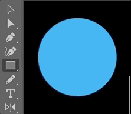
Make a copy then move the shape to the right. Hold Shift and resize the shape.
Creating a Triangle
In the Tools panel, select Fill and set it to none.
Change the Stroke to any color that you like.
Hold down on the Ellipse Tool and select the Polygon Tool from the
hidden panel.
If you draw a shape with the Polygon Tool it is likely that it is not a triangle,
but we can change the number of sides of the polygon. Drag out a shape (don’t let go of your click)
and tap the down arrow key from your keyboard to change the number of sides until you get a
triangle. Before you let go, hold down the Shift Key to align the base then let go of the click.
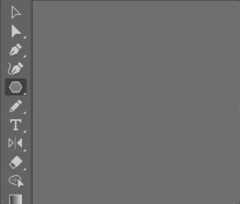
While moving the triangle, make sure to click directly on the stroke to move it because the shape
does not have a Fill Color.
With the Selection Tool, stretch the top of the triangle upwards and move the sides
inward, matching as closely as possible to the template. Make a copy.
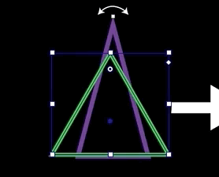
The second triangle is rotated 90 degrees clockwise, and instead of trying to rotate the triangle to
exactly 90 degrees, let's set the rotation to 45 degree increments. Select the copy of the triangle
with the Selection Tool and hover over the corner until the cursor becomes a
double-sided arrow. Next, hold down the Shift Key and rotate the triangle 90 degrees.
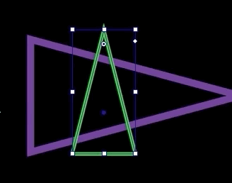
Resize the triangle and you are done!
Transforming Shapes with Anchor Points
In Illustrator, every shape is composed of points connected by paths; we can change a shape by manipulating
individual points with the Direct Selection Tool. In this section, we will focus on utilizing the Direct
Selection Tool to create unique shapes.
Transforming a Rectangle
Draw a rectangle and reposition if necessary.
Make a copy of the rectangle.
Direct Selection Tool
Direct Selection Tool:
Use this tool to select individual anchor points within a shape.
Select individual anchor points or path segments by clicking on them, or select an entire path or
group by selecting any other spot on the item.
Select multiple anchor points by holding Shift and clicking each additional point, or by dragging a
box around all points you would like to select.
Shortcut:A
From the Tools Panel, choose the Direct Selection Tool. Click once on the top-right
anchor point to select it and then click and drag the anchor point inwards.
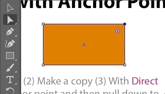
Creating an Organic Shape
Draw a circle and reposition if necessary.
Make a copy and use the Direct Selection Tool to select the bottom anchor point.
Click and drag the point downwards.
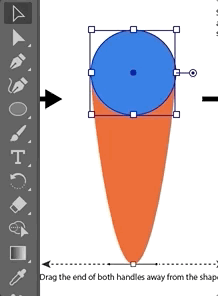
We can adjust the curvature of the shape with handles. Depending on the angle and length of the
handles, it changes the direction and size of the curve. Select the bottom anchor point with the
Direct Selection Tool then drag the handles away from the shape until curvature of
the shape matches the template.
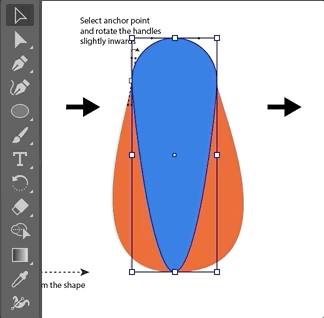
Make a copy then click on the left anchor point with the Direct Selection Tool.
Rotate the handles slightly inwards by dragging the top handle to to the right. Afterwards, select
the top anchor point and drag it downwards.
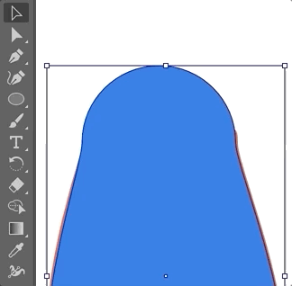
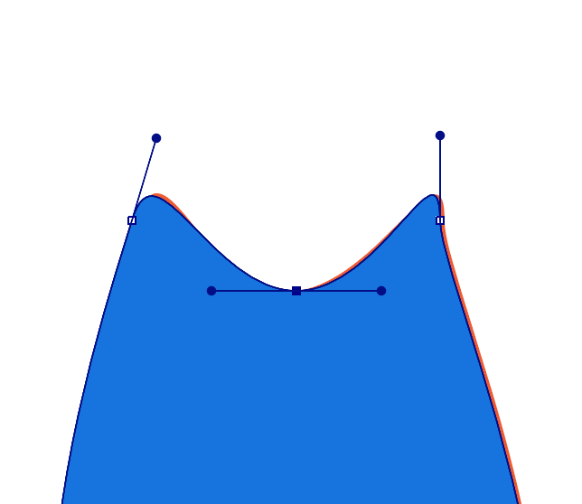
Creating a Rounded Square
Draw a square and choose a Fill Color.
Inside the shape, there are four white circles near each corner, and these allow us to round the
corners of the square. Click on a white circle and drag it inwards.
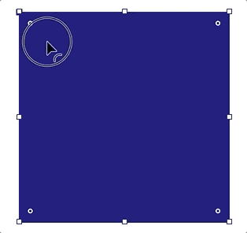
The previous step rounded all the corners at once, but we can also round out a specific corner. Click
on the anchor point with the Direct Selection Tool to active it and drag the the
white circle inwards.
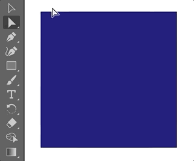
Let's adjust the transparency of the shape by lowering its Opacity. Go to the Properties Panel and
change the opacity to 50%.
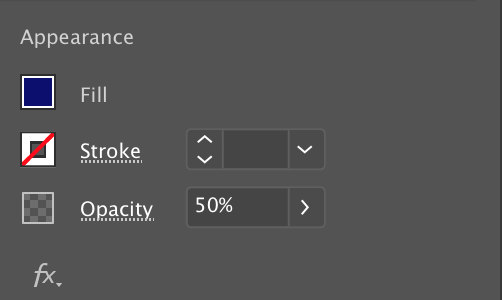
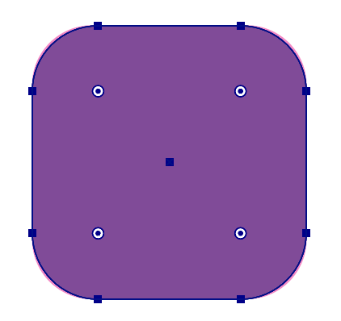
Pen Tool
In Illustrator, the Pen Tool is used to draw custom shapes from scratch by laying out a series of curve
and corner points connected by paths. We’ll complete a few practice exercises.
Exercise 1: Straight Lines
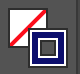
Before you start drawing, make sure that the Stroke Color is set to a color that you can see
easily and that the Fill Color is set to none
In the Tools Panel, select the Pen Tool.
Pen Tool
The Pen tool is used to create anchor points and adjust the angles of the curves connecting them.
Click once to create an anchor point. A line appears from the last anchor point you've placed,
connected to wherever your mouse cursor is on screen. Click again to create additional points.
Click and drag to set the angle for the control handle, which affect the angle of lines
(also known as paths) that connect the anchor points.
Click the first point you created to close your shape and stop adding new points.
To stop creating new points without closing your shape, hit the Esc key or select
another tool.
Click once in the center of point 1 to place your first anchor point. The Pen Tool creates paths
between multiple points, so we won’t see a line appear until we place the next point.
Click once on point 2 to place another anchor point. This time, a line should appear between
points 1 and 2.
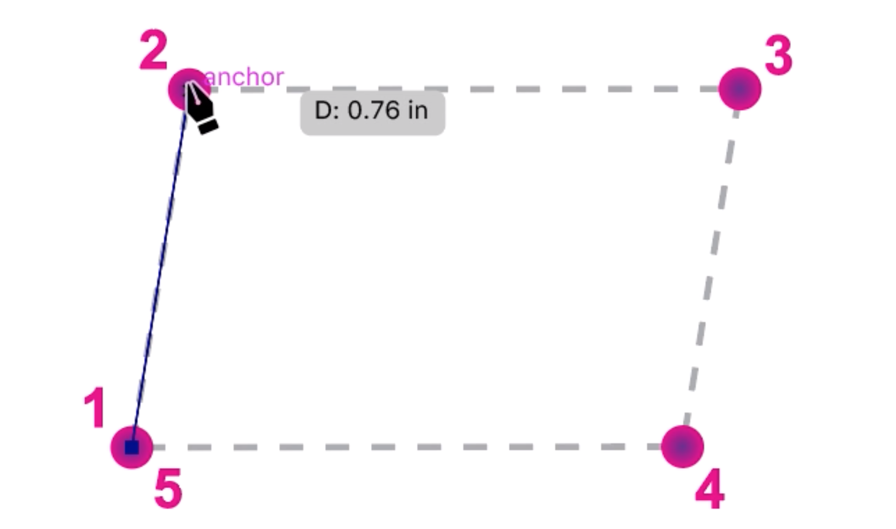
Click on points 3 and 4 to continue drawing the shape.
Modifying Shape
Use the Direct Selection tool to move individual points at any time.
To close the shape, hover over point 5 until you see a small circle appear next to your cursor.
This indicates that Illustrator will now close the path. Click on point 5 to close the path.
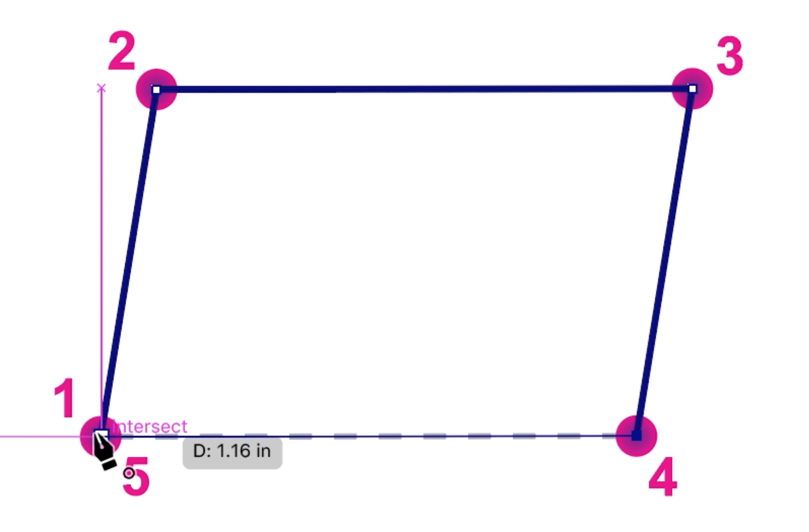
Here is a clip of the whole process:
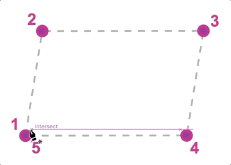
Exercise 2: Curved Lines
For this exercise, we will be creating a curved line with handles. With the Pen
Tool still selected, click on point 1 and drag upwards toward the red circle and
release the mouse. Though we won’t see a line appear until we create the next point, adding
these handles to our first point sets the stage for a curved line.
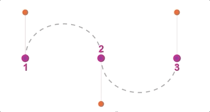
Click in the center of point 2 and drag downwards toward the red circle. A curved path is created
between points 1 and 2. Note that if we dragged upwards at point 2, the curve would have formed
an S shape instead of a U shape.
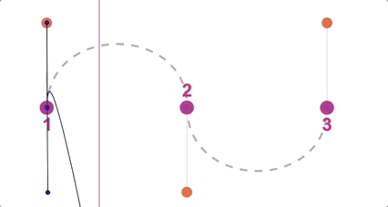
Finish the curved line by Clicking once in the center of point 3 and drag upwards toward the red
circle.
Since this is not a closed shape, we will need to press the Enter key in order to move on to
another task. Using the Direct Selection Tool, we can move the handles to
adjust the curves.
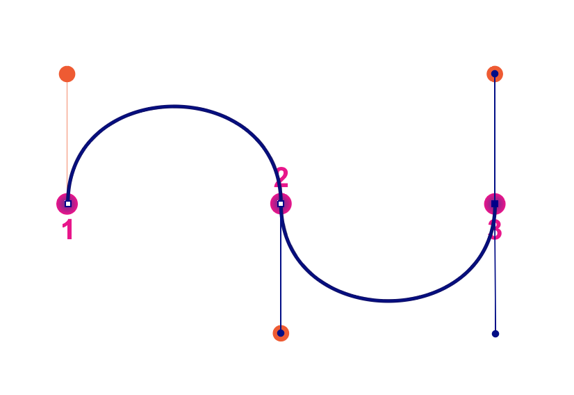
Exercise 3: Heart
The first two exercises covered the bare essentials of the Pen Tool; now, we will apply what we learned
by drawing a heart! We will use this heart in the e-card later. Make sure that you are not still editing
your curve from Exercise 2. Either press the Enter key or switch to the Selection tool, then back to the
Pen tool.
Before moving onto the next section, try to do this exercise without help. .
Click on point 1 to start the shape.
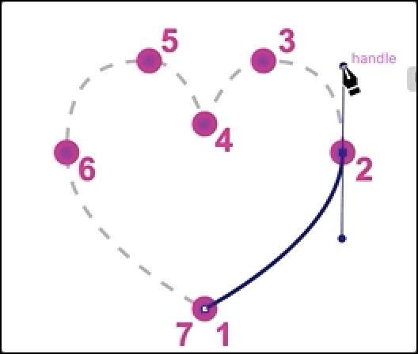
Click point 2 and drag upwards to create a set of handles. It will help to hold Shift while
dragging handles -- this will restrain their angle to 45 degree increments.
Click on point 3 and drag slightly to the left.
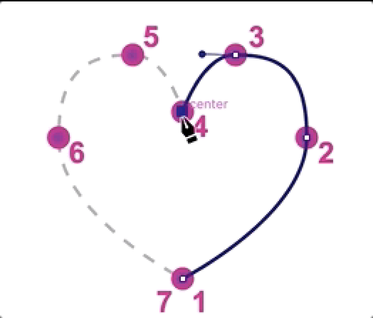
Click point 4, but do not drag! We want this to be a corner.
Click point 5 and drag your cursor to the left.
Click point 6 and drag your cursor downward.
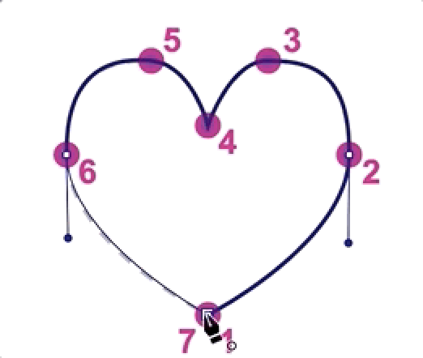
Hover over point 7 until you see a small circle appear next to your cursor. This indicates that
Illustrator will now close the path. When you see the circle appear, click point 7.
Here is a clip of the whole process:
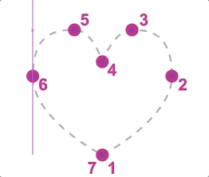
If needed, adjust the shape of the heart by using the Direct Selection Tool and
playing with the handles and anchor points to match the dotted outline as closely as possible.
Change the Fill Color to a light red and set the Stroke to none.
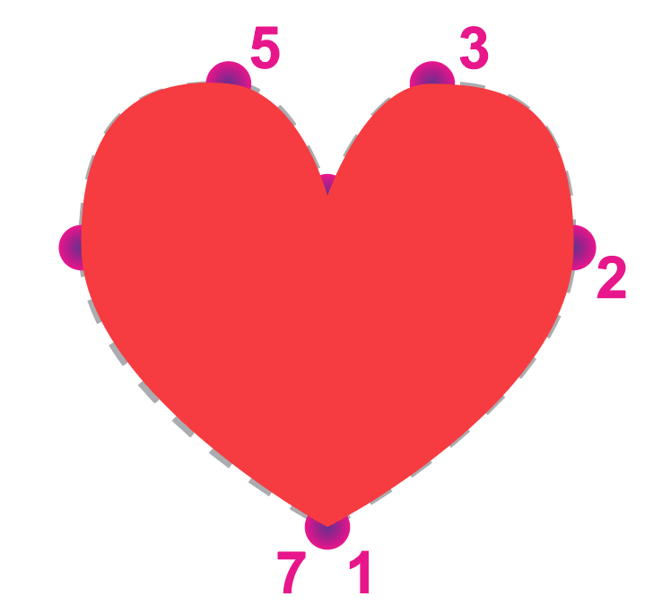
If you have time, practice making your own shapes with the Pen Tool! The kind of curve that the
Pen Tool makes is called a bezier, and it is used in an extremely wide variety of softwares
including programs for design, sound production, and animation.
For even more practice, here’s a fun game to help you master the pen tool: http://bezier.method.ac/
Shape Builder Tool
The Shape Builder Tool allows us to combine and delete shapes. We will explore these two features in the
Cloud and Moon exercise.
Cloud
First we will use the rubberband method to select all of the shapes. Use the Selection
Tool and drag over the area to select the shapes.
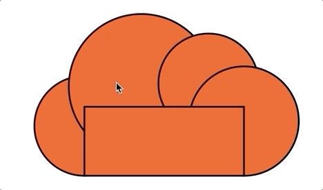
From the Tools Panel, click on the Shape Builder Tool. Drag over all the shapes
to create a line connecting all the pieces. Let go of the click and the shapes should be
combined into a large cloud.
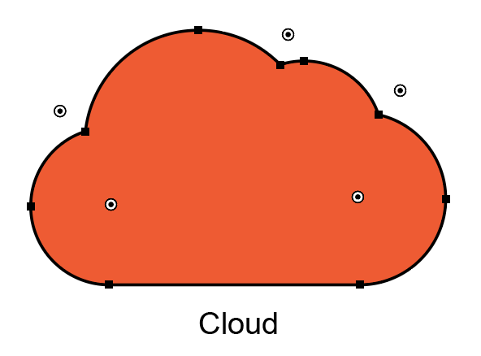
Moon
Using a similar process, select both circles with the rubberband method.
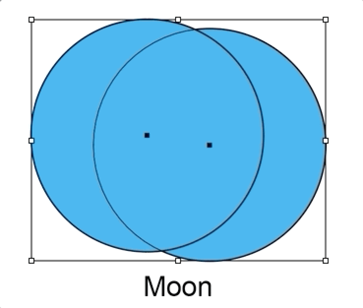
While on the Shape Builder Tool, hold the Alt/Option Key while
dragging a line though the left circle to delete that part of the overlapping shape.
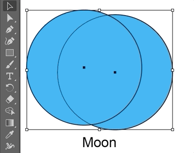
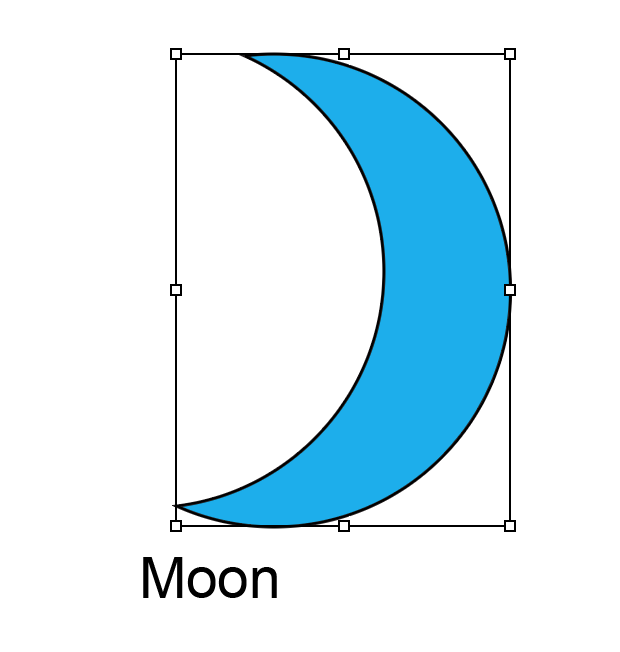
Pathfinder
Like the Shape Builder Tool, Pathfinder also allows us to combine and delete shapes. The only difference
is the fact that we can choose from a list of preset options in Pathfinder to create our unique shape.
Let's look at how Pathfinder works by applying it to the two previous exercises.
Pathfinder
The Pathfinder Panel allows you to create more complex shapes by combining or subtracting two or more
overlapping shapes. Access Pathfinder via Window > Pathfinder
Select two or more overlapping shapes and use the Shape Modes buttons in the Panel to combine them.
The four modes are:
Unite: Combine two or more shapes into one, eliminating internal paths that
overlap.
Minus Front: Subtract the shape in front from the shape behind.
Intersect: Keep only the areas where both shapes overlap.
Exclude: Remove the areas where both shapes overlap.
Pathfinder options
OriginalUnite
Minus Front
Intersect
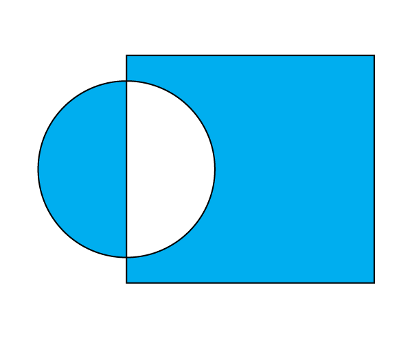
Exclude
Cloud
Undo the changes with Ctrl/Command+z until you revert both the Cloud and
Moon examples to its orginal state.
Use the rubberband method to select all of the shapes.
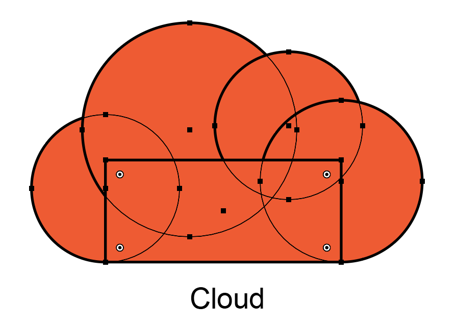
In the Application Bar, go to Windows > Pathfinder.
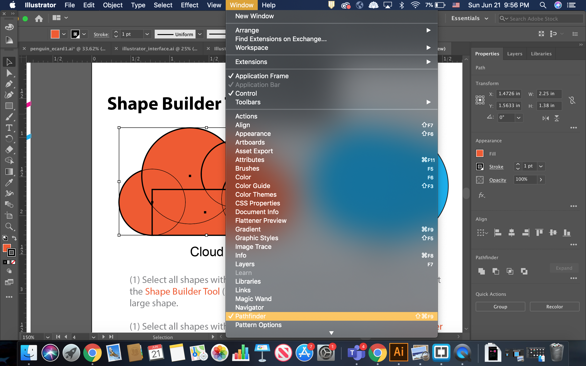
Select Unite from the list of Shape Modes.
Moon
Select both shapes with the rubberband method.
From Shape Modes, select Minus Front.
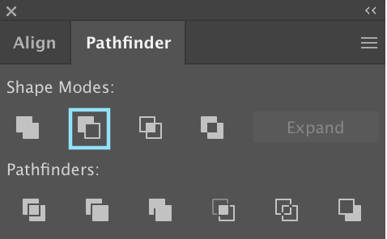
As you can see, Pathfinder and the Shape Builder Tool accomplishes the same task, and it all comes down
to personal preference.
Type Tool
The Type Tool is very similar to other programs that utilize text. We will look at how we can change the
properties of the text with the following exercise.
From the Tools Panel, select the Type Tool.
Drag a text box that matches the dotted template and write a message of your choice.
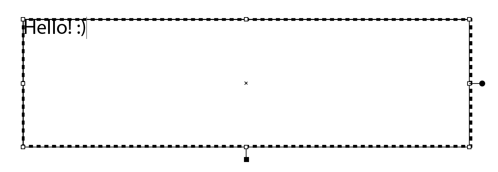
Highlight the entire message to select it.
Go to the Properties Panel and change the Fill and/or Stroke Color.
Use the dropdown to explore the variety of Fonts and choose one to your liking.
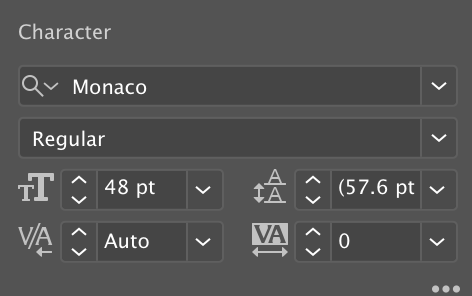
Change the Font Size, and if part of your text is missing it means your text is too large for the
size of the text box. To fix this, you need to decrease the size of your font or increase the size
of your text box.
Grouping Shapes
Grouping shapes is a useful feature in Illustrator because we can move all the shapes at once without
having to select all of them each time. We will group the shapes of the eye to help us create the second
eye.
Select all the shapes with the rubberband method then right-click and select
Group.
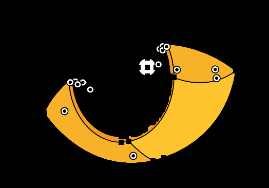
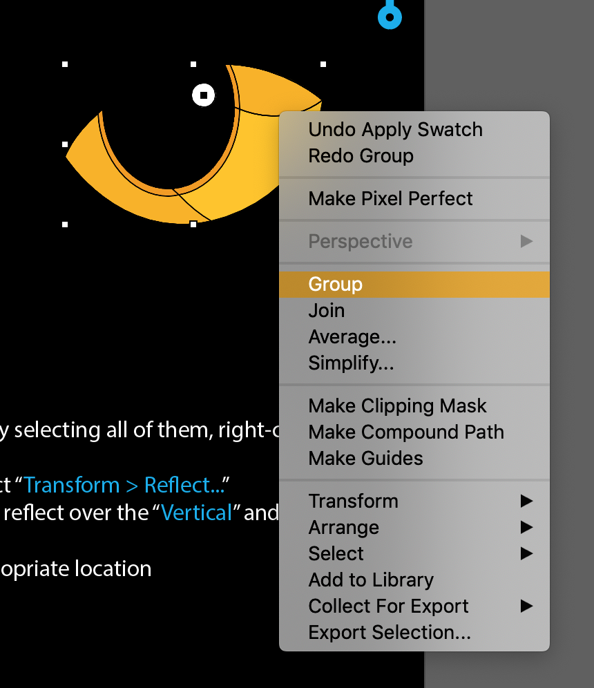
In order to create the other eye, right-click and select Transform > Reflect...
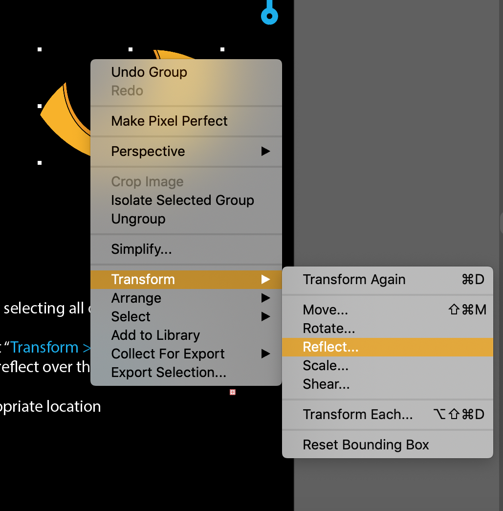
From the menu, choose to reflect over the Vertical axis and click Copy.
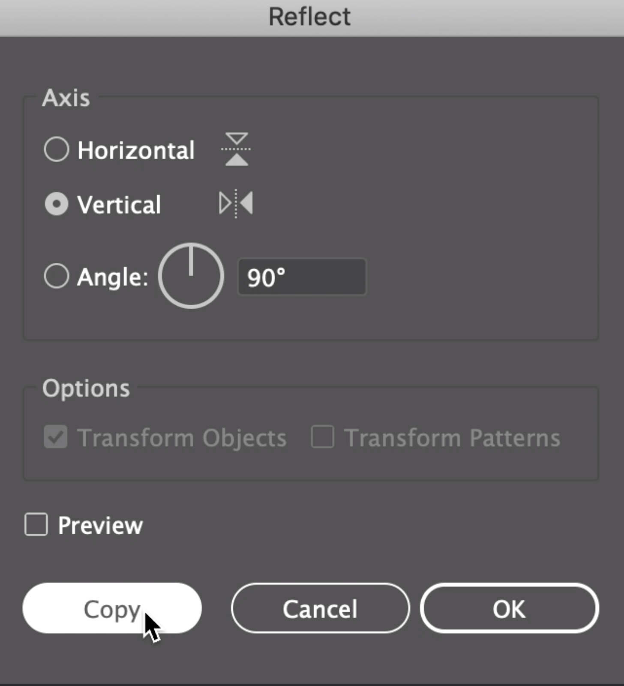
Move the copy and align it to the other eye.
With the exercises completed, we will apply these skills in our next project! Don't close this tab
because we will use the heart we created from this file in the e-card later.
Creating an E-card
Now that we have gained a better idea of the program, we will utilize these tools in this e-card
exercise.
Document Setup
Use the blank document you created at the beginning of the workshop. Refer to these document
settings if you need to recreate it:
Modifying Shape Paths for the Body
In the Tools Panel, Click the Ellipse Tool.
Create a vertical ellipse.
With the ellipse selected, go to the Tools Panel and locate the Fill. Change the Fill
Color of the ellipse to dark blue. Since we do not want a stroke, click on the stroke
swatch and select the white square with the red slash through it, which means no color.
In the Tools Panel, select the Direct Selection Tool then click on the
right-most anchor point of the body. Hold the Shift Key and click on the left-must anchor point. Now that both points are selected, drag one of the anchor points downwards. You should see both anchor points moving at once.
In order to finish the body, we will flatten the top of the shape. With the
Direct Selection Tool, click and drag the top-most anchor point
downwards.
The finished shape should look something similar to this:
We want to recreate the shape for the belly so use the Selection Tool to
select the blue body. While holding the Alt/Option key, click and drag the
body to create a copy.
In the Tools Panel, change the Fill Color to white.
While holding down Shift, downsize the shape using the Selection Tool.
Position the shape on the lower half of the body.
Creating the Beak
Next, add a beak to the penguin by creating a small horizontal ellipse. Change the Fill to
coral and position the beak above the belly.
Using Pathfinder for the Eyes and Wings
For the next two body parts, we will be using the Pathfinder Tool. First, we
will create the crescent shaped eyes.
Click on the Ellipse Tool and create a horizontal ellipse that is slightly
circular.
Create a horizontal ellipse then position it on the lower half of the circle. Select both
shapes with the Selection Tool.
In the Application Bar, go to Windows > Pathfinder. From the Shape Modes,
select Minus Front to create the crescent shaped eyes.
While holding Shift, resize the eye using the Selection Tool. Now position
the eye on the body and change the Fill to white.
Create a copy of the eye then position the second eye on the body.
The last body part we will be using Pathfinder for are the wings.
Eyedropper Tool
Eyedropper Tool
Use this tool to select color from another area of your artboard and replicate the color for
an object.
Shortcut: I
Use the Ellipse Tool to create a long horizontal ellipse. We want the wings to be the same
shade of blue as the body, so select the ellipse then go to the Tools Panel
and click on the Eyedropper Tool. Click on the body to replicate the color.
Using the Rectangle Tool, drag a rectangle up to the halfway point of the
ellipse.
With both the rectangle and ellipse selected, click on Minus Front from the
Pathfinder options to create a half ellipse. Resize and rotate the wing then position it on
the body.
For the second wing, use the Selection Tool to select the first wing and
right-click. Select Transform > Reflect. From the panel, choose
Vertical axis then click Copy. Move the wing to the right
side of the body.
Combining Shapes with the Shape Builder Tool
Draw a circle with the Ellipse Tool by holding Shift while dragging out.
Select the Eyedropper Tool and Click on the beak to replicate the shade of
coral for the feet.
Select the Rounded Rectangle Tool. Begin moving your cursor to the upper
right area above the circle until the Smart Guides indicate that your cursor is above the
“intersection” point of the circle. From that area, drag a rounded rectangle to the point
where the Smart Guides indicate the location of the “anchor” point.
Rounded Rectangle Tool Not Appearing?
As of Illustrator 2020, the Rounded Rectangle Tool is hidden from the Tool
Panel.
To enable this tool, go to bottom of the Tools Panel and click on the icon with three dots.
From the expanded panel, select the Rounded Rectangle Tool.
Right now, the circle and the rounded rectangle are separate shapes, but we can combine both
shapes using the Shape Builder Tool. First, select both shapes then click on the
Shape Builder Tool. Click and hold while dragging a line through all the
pieces. Resize the shape and allign the foot with the halfway point of the eye.
Make a copy of the foot and position it the same manner.
Moving Objects to Another Document
We will now drag the heart we created from the practice files. Click on the Illustrator
Practice Files tab, and within the Pen Tool Exercise, find the heart we created earlier.
With the Selection Tool, click and hold while dragging the heart to the
other tab. Release once a green plus sign appears on the Penguin E-Card document. Finally,
position the heart on the belly.
Removing Shapes with the Shape Builder Tool
For this part of the tutorial, we will add dimension to the penguin by creating shadows with the
Shape Builder Tool.
First, we will add a shadow to the beak. Drag a rectangle to the halfway point of the ellipse
then change the fill to black.
In order to have a more shadow-like effect, go to the Properties Panel and lower the Opacity
to a somewhere between 10-15%.
In this case, we do not want to use the rubberband method to select the beak and the
rectangle because it will also select the shapes behind it, so we will have to use a
different method. Using the Selection Tool select the gray rectangle then
hold Shift while clicking on the beak. Next, click on the Shape Builder
Tool in the Tools Panel. Hold down the Alt/Option key and click the
gray area outside of the beak.
In a similar fashion, we will add a shadow that covers half of the penguin. Drag a rectangle
to the vertical halfway point of the penguin and change the Fill to black.
Go to the Properties Panel and lower the Opacity to a somewhere between 10-15%.
In order to get rid of the unnecessary gray area, first use the rubberband method to select
all the shapes. Click on the Shape Builder Tool then hold the
Alt/Option key and click the gray area outside of the penguin.
Grouping Objects
Right now, all the parts of the penguin are individual pieces, but you can group these shapes
together. This allows you to easily move and resize the penguin without having to use the
rubberband method each time. First, select the penguin using the rubberband method then go
to Object > Group. To ungroup the shapes, go to Object >
Ungroup.
Creating A Background
With the completed penguin, it is time to place a background. To start, select the
Rectangle Tool and place your cursor at the corner of the document where
the Smart Guides indicate the “Intersect” point. Drag a rectangle to the opposite corner.
In this tutorial we end up choosing a solid background, but you can choose between a solid
and a gradient background. With the background shape selected, click the Gradient Fill
(highlighted in green in the picture) from the Tools Panel under Fill/Stroke Color.
Make sure the the solid color swatch square in on top of the hollow square (since we
want to change the Fill not the Stroke), then choose a type of gradient.
Double-click the solid color swatch in the gradient slider bar to change the color.
In order to change the color mode, click the icon in the upper right corner of the
panel and select RGB. From there, choose any color that you like.
By moving the gray diamond shapes above the Gradient slider, it allows us to adjust
the color transitions in the gradient. Play around with it until you end up with a
product that you like.
In order to add more colors to the gradient, hold down the Alt/Option key
while clicking and dragging a swatch on the gradient slider. Change the color in the
same way as mentioned in steps 2 and 3.
Once you are pleased with your gradient, you can either leave it as your background
or change the fill of the rectangle to a pale pink color.
Our rectangle is currently above the penguin, but we can change the order of the layers.
Right-click the rectangle then go to Arrange > “Send to Back”.
We are almost down with our e-card! The final part is adding text. In the Tools Panel, select
the Type Tool. Drag out a text box and add a message.
Change the size of the text by going to the Properties Panel and increasing the font size to
115 pt.
In this tutorial we use the font Rockwell, but you can play with the style of fonts in the
dropdown bar to find the font that you like.
With the text box selected, use the Eyedropper Tool and click on the body of
the penguin to replicate the shade of blue for the text.
We are done assembling the ecard! Next, let's finish the project by exporting and saving our
work.
Saving/Exporting Final Artwork
When saving or exporting from Illustrator, it is important to choose file formats and settings
that are appropriate for the intended use of your artwork. In this section, we’ll first save and
export our e-card then we will learn more about how we can save artwork properly for print and
web applications.
Saving/Exporting the Ecard
Go to File > Export > Export As...
Export > Export As... selected">
Change the file format to JPEG because it allows us to display millions
of colors. Choose your desired folder and click Export.
From the JPEG menu, various options appear. You might notice that the color mode is set
to RGB. The RGB color mode is suitable for artwork that will be viewed on screens
because the colors will be vibrant on computer and phone screens. To preserve the quality of the image, set the quality to 10 and the select 300 ppi for the resolution. Keep the rest of the settings the same and click OK.
Congratuations on completing the penguin ecard! You can send it to your friends, family, or
whoever you wish to send it to. The following section will explain how you can save other
projects.
Saving for the Web
Images used on the Web must meet specific file format and size requirements. For example, in
order to use a banner graphic on a website, we’ll need to convert it to a different file format.
This process is called image optimization.
Image Size/Resolution
Since image file sizes affect the amount of time it takes to load a web page into a browser, it’s
important to keep file sizes as small as possible, while still maintaining reasonable quality.
Always set image resolutions to 72ppi (pixels per inch) - this is the default resolution
of most device screens.
Always scale images to the exact size needed - if the space on your web page is 960px x
180px, your image should be 960px x 180px. While browsers can scale images to fit a
particular space, this results in distortion and/or image files that are larger than
necessary.
Web Image Formats
Web browsers are only able to display a few types of images, therefore, we often need to convert
original images into a web-friendly format. Different formats are used for different types of
images:
Format
Characteristics
Best for
GIF
Great at compressing flat color, but can only display 256 colors. Can display simple
on/off transparency.
Illustrations/text with flat colors, and animation
JPEG
Can display millions of colors; smaller file size than PNG-24
Photographs, graded colors (ie: gradients)
PNG-8
Great at compressing flat color, but can only display 256 colors. Can display simple
on/off transparency. (similar to GIF)
Illustrations/text with flat colors
PNG-24
Able to display partial transparency (shadows, etc)
Illustrations with more complex colors, screenshots, and non-photograph images
Optimizing Images
Fortunately, Illustrator includes features that make it easy to optimize web graphics.
In the top menu bar, Choose File > Export > Save for Web.
Illustrator attempts to choose the file format and settings that are best for the artwork
in your document. As noted in the table above, GIF and PNG files are generally best for
illustrative art.
In the Save window that opens, Change the file name and save it to your desired folder.
Click Save
Saving for Print
You can print Illustrator files from the computer that you created them on without issue,
however, if you are printing files from another computer or sending them to a print shop, there
are a few points to note:
Color Space
For printing, Illustrator files should be in CMYK color mode. Using the Print Preset when
creating a new document sets the color mode to CMYK. To verify that your document is in CMYK
mode:
In the top menu bar, Choose File > Document Color Mode.
Make sure that CMYK is selected.
Fonts
Fonts are stored on individual computers - there’s no guarantee that another computer or a print
shop will have the font(s) you used in your document. To ensure that your type shows up as
planned, it’s a good idea to convert your type to outlines. This means changing your type from
live, editable type to shapes that Illustrator treats just like any other shape object. To
convert type to outlines:
Before outlining type, always Save a Copy of the file (File > Save a
Copy).
Make sure that all objects and layers are unlocked, then select everything in your
document (Edit > Select All or Ctrl/Command + A).
In the top menu bar, Choose Type > Create Outlines.
DO NOT save outlined type in your original document - you won’t be able to edit it!
Links
Though we did not cover placing images into Illustrator files, you’ll likely encounter this
feature as you work further in Illustrator. When images are placed into Illustrator documents,
they are not embedded into the file; instead, a reference (link) to an external file is created.
In order to print files with linked images, the external image files must be available. To avoid
missing images, do one of the following:
Place all of your linked files into one folder and supply this to your printer, along
with your document file.
Embed your linked files into the document:
In the top menu bar, Choose Window > Links to open the Links Panel
Select all of the files in the Links Panel, then Click the Menu Icon and Click Embed
Image.
Save your document as a PDF (see instructions below); linked files will automatically be
embedded into the PDF.
File Format
Most print shopes use Adobe Creative Suite software, but they may not have the same version that
you used to create your document. To avoid file format problems, it’s a good idea to save your
final document in a universal format, such as PDF. To save a PDF from Illustrator:
Outline your fonts first, following the directions above - fonts are not embedded in PDF
documents.
In the top menu bar, Choose File > Save As
In the Save As window that opens, Choose Adobe PDF, then Click Save.
In the Save Adobe PDF window that opens, Set the Adobe PDF Present field to High
Quality Print.


 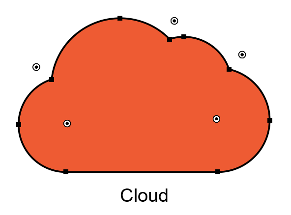
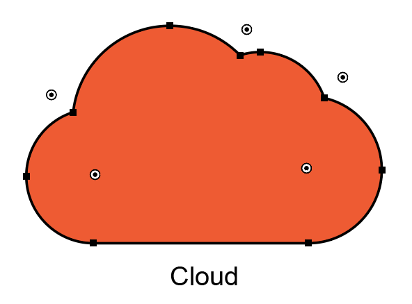